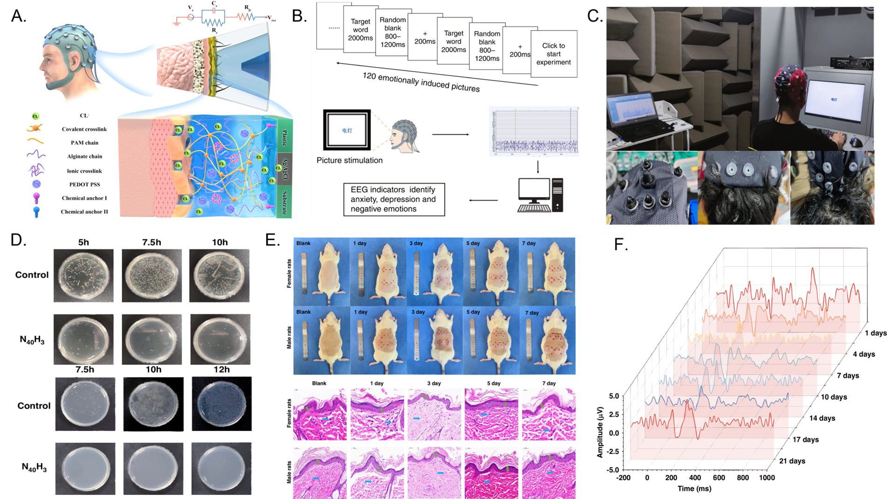

Research Background and Significance
Non-invasive brain-computer interfaces have garnered significant attention due to their high safety, ease of use, and broad application scenarios. However, the development of high-performance non-invasive EEG electrodes still faces considerable challenges due to limitations of traditional EEG electrodes, including insufficient sensitivity, susceptibility to drying, poor comfort, and difficulty in long-term reuse. To address these issues, the research team engineered a semi-dry hydrogel EEG sensor with superior antibacterial properties through synergistic regulation of polymer monomers, ionic buffers, and chitosan. This innovation enables long-term, stable, and repeatable EEG signal acquisition. In event-related potential (ERP) experiments, the hydrogel electrode successfully captured clear ERP waveforms, achieving a signal-to-noise ratio of 20.02 dB—comparable to conventional wet electrodes (Microsyst. Nanoeng. 2023, 9:79). During continuous wear testing, the electrode-scalp contact impedance remained below 100 kΩ for 12 hours, whereas conventional wet electrodes failed to yield valid signals after 7–8 hours due to dehydration, fully demonstrating the long-term stability of this hydrogel electrode. Furthermore, the incorporation of chitosan endows the electrode with outstanding antimicrobial properties, significantly inhibiting the growth of both Gram-negative and Gram-positive bacteria. This effectively reduces the risk of bacterial infection during prolonged reuse (Microsyst. Nanoeng. 2025, 11:105). This achievement provides a critical material foundation for the large-scale application of non-invasive wearable brain-computer interfaces. Currently, related technologies are accelerating their transformation and implementation in application scenarios such as motor imagery recognition, driving/work fatigue monitoring, and brain cognitive rehabilitation training.
Core Methods and Technologies

Figure 1. Design and Characterization of Hydrogel Electrodes. (A) Design of the substrate-adhesive bilayer hydrogel material; (B) Experimental workflow for N170 testing; (C) Comparison of EEG signal acquisition using hydrogel electrodes versus wet electrodes; (D) Inhibitory effects against Escherichia coli and Staphylococcus epidermidis; (E) Biosafety characterization results for antibacterial conductive hydrogel electrodes; (F) Continuous acquisition of N170 waves using the same hydrogel electrode over 21 days of repeated use.